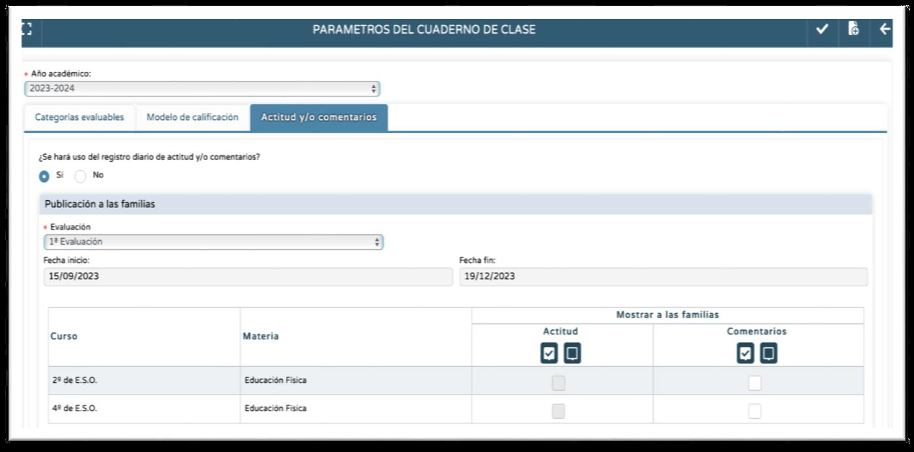
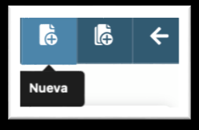
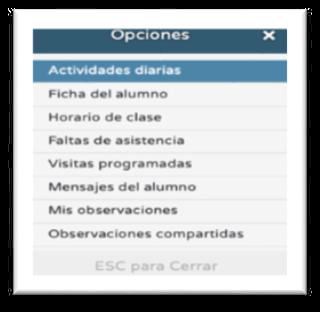

3. Actitud y/o comentarios
En esta pestaña podemos decidir que nuestro Cuaderno incluya o no un registro de Comentarios y/o Actitud; al mismo tiempo tendremos la posibilidad de elegir si esos registros se mostrarán o no a las familias:

a. Obsérvese que esta configuración se hace para cada convocatoria de evaluación. Si se desea la misma configuración para todo el curso se recomienda hacerlo para las todas las convocatorias igual al principio de curso (configuramos la 1ª evaluación, aceptamos, después la 2ª, aceptamos,…).b. Si se desea usar estos registros de seguimiento académico (no directamente calificables) se marcará Sí en ¿Se hará uso del registro diario de actitud y/o comentarios?.
c. Si queremos que estos registros sean visibles a las familias marcaremos el check en Mostrar a las familias. Esta decisión se puede hacer diferenciada por registro (Comentarios/Actitud) y por curso/área-materia-ámbito-módulo. En caso de que la decisión sea visibilizar a las familias, cada vez que registremos una Actitud o un Comentario, a los tutores legales les saltará una notificación iPasen informando de que hay un nuevo registro (siempre que tengan activadas las notificaciones para esa aplicación). Entrando en iPasen, en el apartado Actividades Evaluables podrán comprobar el contenido del comentario o el sentido de la actitud registrada.
d.Los registros de Comentarios y Actitud son diarios, estando disponibles en el Cuaderno cada día. Por el contrario, en un mismo día no podemos registrar más de una Actitud y más de un Comentario para cada alumno/a de ese curso y área-materia-ámbito-módulo.
e. Los Comentarios se mostrarán en el Cuaderno en las primeras columnas, tras el nombre y foto de cada alumno/a. Es una caja de texto en la que podemos hacer una anotación sobre el alumno/a (una observación sobre su trabajo diario, sobre su actitud, una aclaración sobre una calificación,…).

f. La Actitud se mostrará en las primeras columnas del cuaderno con dos símbolos, uno de cara alegre para registrar actitud positiva y otro de cara triste para registrar actitud negativa. Marcaremos la cara alegre si la actitud del alumno/a es positiva; la cara se pondrá de color verde; marcaremos la cara triste si la actitud es negativa, tiñéndose de color rojo. Siendo un registro diario, el Resumen del Cuaderno nos mostrará el número de veces que hemos registrado una y otra actitud.
g. Se recuerda que estando en el Cuaderno y pinchando sobre un alumno/a aparecerá un menú emergente en el que una de las entradas es Actividades Diarias. Accediendo a ella tendremos acceso a todos los registros diarios del alumno/a, incluidos los Comentarios y la Actitud.

h. El registro de Actitud está disponible desde mediados del curso 2023-24 para todas las enseñanzas. (Vídeo de apoyo)